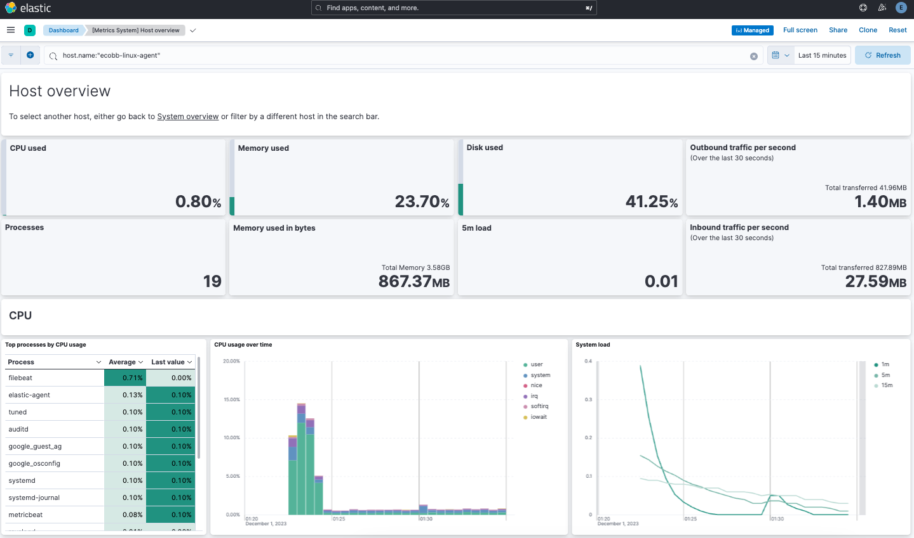

Tutorial 2: Securing a self-managed Elastic Stackedit
This tutorial is a follow-on to Tutorial 1: Installing a self-managed Elastic Stack. The first tutorial describes how to configure a multi-node Elasticsearch cluster and then set up Kibana, followed by Fleet Server and Elastic Agent. In a production environment, it’s recommended after completing the Kibana setup to proceed directly to this tutorial to configure your SSL certificates. These steps guide you through that process, and then describe how to configure Fleet Server and Elastic Agent with the certificates in place.
Securing the Elastic Stack
Beginning with Elastic 8.0, security is enabled in the Elastic Stack by default, meaning that traffic between Elasticsearch nodes and between Kibana and Elasticsearch is SSL-encrypted. While this is suitable for testing non-production viability of the Elastic platform, most production networks have requirements for the use of trusted CA-signed certificates. These steps demonstrate how to update the out-of-the-box self-signed certificates with your own trusted CA-signed certificates.
For traffic to be encrypted between Elasticsearch cluster nodes and between Kibana and Elasticsearch, SSL certificates must be created for the transport (Elasticsearch inter-node communication) and HTTP (for the Elasticsearch REST API) layers. Similarly, when setting up Fleet Server you’ll generate and configure a new certificate bundle, and then Elastic Agent uses the generated certificates to communicate with both Fleet Server and Elasticsearch. The process to set things up is as follows:
- Prerequisites and assumptions
- Step 1: Generate a new self-signed CA certificate
- Step 2: Generate a new certificate for the transport layer
- Step 3: Generate new certificate(s) for the HTTP layer
- Step 4: Configure security on additional Elasticsearch nodes
- Step 5: Generate server-side and client-side certificates for Kibana
- Step 6: Install Fleet with SSL certificates configured
- Step 7: Install Elastic Agent
- Step 8: View your system data
It should take between one and two hours to complete these steps.
Prerequisites and assumptionsedit
Before starting, you’ll need to have set up an on-premises Elasticsearch cluster with Kibana, following the steps in Tutorial 1: Installing a self-managed Elastic Stack.
The examples in this guide use RPM packages to install the Elastic Stack components on hosts running Red Hat Enterprise Linux 8. The steps for other install methods and operating systems are similar, and can be found in the documentation linked from each section.
Special considerations such as firewalls and proxy servers are not covered here.
Step 1: Generate a new self-signed CA certificateedit
In a production environment you would typically use the CA certificate from your own organization, along with the certificate files generated for the hosts where the Elastic Stack is being installed. For demonstration purposes, we’ll use the Elastic certificate utility to configure a self-signed CA certificate.
-
On the first node in your Elasticsearch cluster, stop the Elasticsearch service:
sudo systemctl stop elasticsearch.service
-
Generate a CA certificate using the provided certificate utility,
elasticsearch-certutil. Note that the location of the utility depends on the installation method you used to install Elasticsearch. Refer to elasticsearch-certutil for the command details and to Update security certificates with a different CA for details about the procedure as a whole.Run the following command. When prompted, specify a unique name for the output file, such as
elastic-stack-ca.zip:sudo /usr/share/elasticsearch/bin/elasticsearch-certutil ca -pem
-
Move the output file to the
/etc/elasticsearch/certsdirectory. This directory is created automatically when you install Elasticsearch.sudo mv /usr/share/elasticsearch/elastic-stack-ca.zip /etc/elasticsearch/certs/
-
Unzip the file:
sudo unzip -d /etc/elasticsearch/certs /etc/elasticsearch/certs/elastic-stack-ca.zip
-
View the files that were unpacked into a new
cadirectory:sudo ls /etc/elasticsearch/certs/ca/
-
ca.crt - The generated certificate (or you can substitute this with your own certificate, signed by your organizations’s certificate authority)
-
ca.key - The certificate authority’s private key
These steps to generate new self-signed CA certificates need to be done only on the first Elasticsearch node. The other Elasticsearch nodes will use the same
ca.crtandca.keyfiles. -
-
From the
/etc/elasticsearch/certs/ca/directory, import the newly created CA certificate into the Elasticsearch truststore. This step ensures that your cluster trusts the new CA certificate.On a new installation a new keystore and truststore are created automatically. If you’re running these steps on an existing Elasticsearch installation and you know the password to the keystore and the truststore, follow the instructions in Update security certificates with a different CA to import the CA certificate.
Run the
keytoolcommand as shown, replacing<password>with a unique password for the truststore, and store the password securely:sudo /usr/share/elasticsearch/jdk/bin/keytool -importcert -trustcacerts -noprompt -keystore /etc/elasticsearch/certs/elastic-stack-ca.p12 -storepass <password> -alias new-ca -file /etc/elasticsearch/certs/ca/ca.crt
-
Ensure that the new key was added to the keystore:
keytool -keystore elastic-stack-ca.p12 -list
The keytool utility is provided as part of the Elasticsearch installation and is located at:
/usr/share/elasticsearch/jdk/bin/keytoolon RPM installations.Enter your password when prompted. The result should show the details for your newly added key:
Keystore type: jks Keystore provider: SUN Your keystore contains 1 entry new-ca, Jul 12, 2023, trustedCertEntry, Certificate fingerprint (SHA-256): F0:86:6B:57:FC...
Step 2: Generate a new certificate for the transport layeredit
This guide assumes the use of self-signed certificates, but the process to import CA-signed certificates is the same. If you’re using a CA provided by your organization, you need to generate Certificate Signing Requests (CSRs) and then use the signed certificates in this step. Once the certificates are generated, whether self-signed or CA-signed, the steps are the same.
-
From the Elasticsearch installation directory, using the newly-created CA certificate and private key, create a new certificate for your elasticsearch node:
sudo /usr/share/elasticsearch/bin/elasticsearch-certutil cert --ca-cert /etc/elasticsearch/certs/ca/ca.crt --ca-key /etc/elasticsearch/certs/ca/ca.key
When prompted, choose an output file name (you can use the default
elastic-certificates.p12) and a password for the certificate. -
Move the generated file to the
/etc/elasticsearch/certsdirectory:sudo mv /usr/share/elasticsearch/elastic-certificates.p12 /etc/elasticsearch/certs/
If you’re running these steps on a production cluster that already contains data:
-
In a cluster with multiple Elasticsearch nodes, before proceeding you first need to perform a Rolling restart beginning with the node where you’re updating the keystore. Stop at the
Perform any needed changesstep, and then proceed to the next step in this guide. - In a single node cluster, always stop Elasticsearch before proceeding.
-
In a cluster with multiple Elasticsearch nodes, before proceeding you first need to perform a Rolling restart beginning with the node where you’re updating the keystore. Stop at the
-
Because you’ve created a new truststore and keystore, you need to update the
/etc/elasticsearch/elasticsearch.ymlsettings file with the new truststore and keystore filenames.Open the Elasticsearch configuration file in a text editor and adjust the following values to reflect the newly created keystore and truststore filenames and paths:
xpack.security.transport.ssl: ... keystore.path: /etc/elasticsearch/certs/elastic-certificates.p12 truststore.path: /etc/elasticsearch/certs/elastic-stack-ca.p12
Update the Elasticsearch keystoreedit
Elasticsearch uses a separate keystore to hold the passwords of the keystores and truststores holding the CA and node certificates created in the previous steps. Access to this keystore is through the use of a utility called elasticsearch-keystore.
-
From the Elasticsearch installation directory, list the contents of the existing keystore:
sudo /usr/share/elasticsearch/bin/elasticsearch-keystore list
The results should be like the following:
keystore.seed xpack.security.http.ssl.keystore.secure_password xpack.security.transport.ssl.keystore.secure_password xpack.security.transport.ssl.truststore.secure_password
Notice that there are entries for:
-
The
transport.ssl.truststorethat holds the CA certificate -
The
transport.ssl.keystorethat holds the CA-signed certificates -
The
http.ssl.keystorefor the HTTP layerThese entries were created at installation and need to be replaced with the passwords to the newly-created truststore and keystores.
-
The
-
Remove the existing keystore values for the default transport keystore and truststore:
sudo /usr/share/elasticsearch/bin/elasticsearch-keystore remove xpack.security.transport.ssl.keystore.secure_password sudo /usr/share/elasticsearch/bin/elasticsearch-keystore remove xpack.security.transport.ssl.truststore.secure_password
-
Update the
elasticsearch-keystorewith the passwords for the new keystore and truststore created in the previous steps. This ensures that Elasticsearch can read the new stores:sudo /usr/share/elasticsearch/bin/elasticsearch-keystore add xpack.security.transport.ssl.keystore.secure_password sudo /usr/share/elasticsearch/bin/elasticsearch-keystore add xpack.security.transport.ssl.truststore.secure_password
Step 3: Generate new certificate(s) for the HTTP layeredit
Now that communication between Elasticsearch nodes (the transport layer) has been secured with SSL certificates, the same must be done for the communications that use the REST API, including Kibana, clients, and any other components on the HTTP layer.
-
Similar to the process for the transport layer, on the first node in your Elasticsearch cluster use the certificate utility to generate a CA certificate for HTTP communications:
sudo /usr/share/elasticsearch/bin/elasticsearch-certutil http
Respond to the command prompts as follows:
-
When asked if you want to generate a CSR, enter
n. -
When asked if you want to use an existing CA, enter
y.If you’re using your organization’s CA certificate, specify that certificate and key in the following two steps.
-
Provide the absolute path to your newly created CA certificate:
/etc/elasticsearch/certs/ca/ca.crt. -
Provide the absolute path to your newly created CA key:
/etc/elasticsearch/certs/ca/ca.key. -
Enter an expiration value for your certificate. You can enter the validity period in years, months, or days. For example, enter
1yfor one year. -
When asked if you want to generate one certificate per node, enter
y.You’ll be guided through the creation of certificates for each node. Each certificate will have its own private key, and will be issued for a specific hostname or IP address.
-
Enter the hostname for your first Elasticsearch node, for example
mynode-es1.mynode-es1
- When prompted, confirm that the settings are correct.
-
Add the network IP address that clients can use to connect to the first Elasticsearch node. This is the same value that’s described in Step 2 of Tutorial 1: Installing a self-managed Elastic Stack, for example
10.128.0.84:10.128.0.84
- When prompted, confirm that the settings are correct.
- When prompted, choose to generate additional certificates, and then repeat the previous steps to add hostname and IP settings for each node in your Elasticsearch cluster.
-
Provide a password for the generated
http.p12keystore file. -
The generated files will be included in a zip archive. At the prompt, provide a path and filename for where the archive should be created.
For this example we use:
/etc/elasticsearch/certs/elasticsearch-ssl-http.zip:What filename should be used for the output zip file? [/usr/share/elasticsearch/elasticsearch-ssl-http.zip] /etc/elasticsearch/certs/elasticsearch-ssl-http.zip
-
-
When asked if you want to generate a CSR, enter
-
Earlier, when you generated the certificate for the transport layer, the default filename was
elastic-certificates.p12. Now, when generating a certificate for the HTTP layer, the default filename ishttp.p12. This matches the name of the existing HTTP layer certificate file from when the initial Elasticsearch cluster was first installed.Just to avoid any possible name collisions, rename the existing
http.p12file to distinguish it from the newly-created keystore:sudo mv /etc/elasticsearch/certs/http.p12 /etc/elasticsearch/certs/http-old.p12
-
Unzip the generated
elasticsearch-ssl-http.ziparchive:sudo unzip -d /usr/share/elasticsearch/ /etc/elasticsearch/certs/elasticsearch-ssl-http.zip
-
When the archive is unpacked, the certificate files are located in separate directories for each Elasticsearch node and for the Kibana node.
You can run a recursive
lscommand to view the file structure:ls -lR /usr/share/elasticsearch/{elasticsearch,kibana}elasticsearch: total 0 drwxr-xr-x. 2 root root 56 Dec 12 19:13 mynode-es1 drwxr-xr-x. 2 root root 72 Dec 12 19:04 mynode-es2 drwxr-xr-x. 2 root root 72 Dec 12 19:04 mynode-es3 elasticsearch/mynode-es1: total 8 -rw-r--r--. 1 root root 1365 Dec 12 19:04 README.txt -rw-r--r--. 1 root root 845 Dec 12 19:04 sample-elasticsearch.yml elasticsearch/mynode-es2: total 12 -rw-r--r--. 1 root root 3652 Dec 12 19:04 http.p12 -rw-r--r--. 1 root root 1365 Dec 12 19:04 README.txt -rw-r--r--. 1 root root 845 Dec 12 19:04 sample-elasticsearch.yml elasticsearch/mynode-es3: total 12 -rw-r--r--. 1 root root 3652 Dec 12 19:04 http.p12 -rw-r--r--. 1 root root 1365 Dec 12 19:04 README.txt -rw-r--r--. 1 root root 845 Dec 12 19:04 sample-elasticsearch.yml kibana: total 12 -rw-r--r--. 1 root root 1200 Dec 12 19:04 elasticsearch-ca.pem -rw-r--r--. 1 root root 1306 Dec 12 19:04 README.txt -rw-r--r--. 1 root root 1052 Dec 12 19:04 sample-kibana.yml
-
Replace your existing keystore with the new keystore. The location of your certificate directory may be different than what is shown here, depending on the installation method you chose.
Run the
mvcommand, replacing<es1-hostname>with the hostname of your initial Elasticsearch node:sudo mv /usr/share/elasticsearch/elasticsearch/<es1-hostname>/http.p12 /etc/elasticsearch/certs/
-
Because this is a new keystore, the Elasticsearch configuration file needs to be updated with the path to its location. Open
/etc/elasticsearch/elasticsearch.ymland update the HTTP SSL settings with the new path:xpack.security.http.ssl: enabled: true #keystore.path: certs/http.p12 keystore.path: /etc/elasticsearch/certs/http.p12
-
Since you also generated a new keystore password, the Elasticsearch keystore needs to be updated as well. From the Elasticsearch installation directory, first remove the existing HTTP keystore entry:
sudo /usr/share/elasticsearch/bin/elasticsearch-keystore remove xpack.security.http.ssl.keystore.secure_password
-
Add the updated HTTP keystore password, using the password you generated for this keystore:
sudo /usr/share/elasticsearch/bin/elasticsearch-keystore add xpack.security.http.ssl.keystore.secure_password
-
Because we’ve added files to the Elasticsearch configuration directory during this tutorial, we need to ensure that the permissions and ownership are correct before restarting Elasticsearch.
-
Change the files to be owned by
root:elasticsearch:sudo chown -R root:elasticsearch /etc/elasticsearch/certs/
-
Set the files in
/etc/elasticsearch/certsto have read and write permissions by the owner (root) and read permission by theelasticuser:sudo chmod 640 /etc/elasticsearch/certs/elastic-certificates.p12 sudo chmod 640 /etc/elasticsearch/certs/elastic-stack-ca.p12 sudo chmod 640 /etc/elasticsearch/certs/http_ca.crt sudo chmod 640 /etc/elasticsearch/certs/http.p12
-
Change the
/etc/elasticsearch/certsand/etc/elasticsearch/certs/cadirectories to be executable by the owner:sudo chmod 750 /etc/elasticsearch/certs sudo chmod 750 /etc/elasticsearch/certs/ca
-
-
Restart the Elasticsearch service:
sudo systemctl start elasticsearch.service
-
Run the status command to confirm that Elasticsearch is running:
sudo systemctl status elasticsearch.service
In the event of any problems, you can also monitor the Elasticsearch logs for any issues by tailing the Elasticsearch log file:
sudo tail -f /var/log/elasticsearch/elasticsearch-demo.log
A line in the log file like the following indicates that SSL has been properly configured:
[2023-07-12T13:11:29,154][INFO ][o.e.x.s.Security ] [es-ssl-test] Security is enabled
Step 4: Configure security on additional Elasticsearch nodesedit
Now that the security is configured for the first Elasticsearch node, some steps need to be repeated on each additional Elasticsearch node.
-
To avoid filename collisions, on each additional Elasticsearch node rename the existing
http.p12file in the/etc/elasticsearch/certs/directory:mv http.p12 http-old.p12
-
Copy the CA and truststore files that you generated on the first Elasticsearch node so that they can be reused on all other nodes:
-
Copy the
/cadirectory (that containsca.crtandca.key) from/etc/elasticsearch/certs/on the first Elasticsearch node to the same path on all other Elasticsearch nodes. -
Copy the
elastic-stack-ca.p12file from/etc/elasticsearch/certs/to the/etc/elasticsearch/certs/directory on all other Elasticsearch nodes. -
Copy the
http.p12file from each node directory in/usr/share/elasticsearch/elasticsearch(that is,elasticsearch/mynode-es1,elasticsearch/mynode-es2andelasticsearch/mynode-es3) to the/etc/elasticsearch/certs/directory on each corresponding cluster node.
-
Copy the
-
On each Elasticsearch node, repeat the steps to generate a new certificate for the transport layer:
-
Stop the Elasticsearch service:
sudo systemctl stop elasticsearch.service
-
From the
/etc/elasticsearch/certsdirectory, create a new certificate for the Elasticsearch node:sudo /usr/share/elasticsearch/bin/elasticsearch-certutil cert --ca-cert /etc/elasticsearch/certs/ca/ca.crt --ca-key /etc/elasticsearch/certs/ca/ca.key
When prompted, choose an output file name and specify a password for the certificate. For this example, we’ll use
/etc/elasticsearch/certs/elastic-certificates.p12. -
Update the
/etc/elasticsearch/elasticsearch.ymlsettings file with the new truststore and keystore filename and path:xpack.security.transport.ssl: ... keystore.path: /etc/elasticsearch/certs/elastic-certificates.p12 truststore.path: /etc/elasticsearch/certs/elastic-stack-ca.p12
-
List the content of the Elasticsearch keystore:
/usr/share/elasticsearch/bin/elasticsearch-keystore list
The results should be like the following:
keystore.seed xpack.security.http.ssl.keystore.secure_password xpack.security.transport.ssl.keystore.secure_password xpack.security.transport.ssl.truststore.secure_password
-
Remove the existing keystore values for the default transport keystore and truststore:
sudo /usr/share/elasticsearch/bin/elasticsearch-keystore remove xpack.security.transport.ssl.keystore.secure_password sudo /usr/share/elasticsearch/bin/elasticsearch-keystore remove xpack.security.transport.ssl.truststore.secure_password
-
Update the
elasticsearch-keystorewith the passwords for the new keystore and truststore:sudo /usr/share/elasticsearch/bin/elasticsearch-keystore add xpack.security.transport.ssl.keystore.secure_password sudo /usr/share/elasticsearch/bin/elasticsearch-keystore add xpack.security.transport.ssl.truststore.secure_password
-
-
For the HTTP layer, the certificates have been generated already on the first Elasticsearch node. Each additional Elasticsearch node just needs to be configured to use the new certificates.
-
Update the
/etc/elasticsearch/elasticsearch.ymlsettings file with the new truststore and keystore filenames:xpack.security.http.ssl: enabled: true #keystore.path: certs/http.p12 keystore.path: /etc/elasticsearch/certs/http.p12
-
Remove the existing HTTP keystore entry:
sudo /usr/share/elasticsearch/bin/elasticsearch-keystore remove xpack.security.http.ssl.keystore.secure_password
-
Add the updated HTTP keystore password:
sudo /usr/share/elasticsearch/bin/elasticsearch-keystore add xpack.security.http.ssl.keystore.secure_password
-
Change the certificate files to be owned by the
root:elasticsearchgroup:sudo chown -R root:elasticsearch /etc/elasticsearch/certs/
-
Set the files in
/etc/elasticsearch/certsto have read and write permissions by the owner (root) and read permission by theelasticuser:chmod 640 *
-
Change the
/etc/elasticsearch/certsand/etc/elasticsearch/certs/cadirectories to be executable by the owner:chmod 750 /etc/elasticsearch/certs chmod 750 /etc/elasticsearch/certs/ca
-
-
Restart the Elasticsearch service.
sudo systemctl start elasticsearch.service
-
Run the status command to confirm that Elasticsearch is running.
sudo systemctl status elasticsearch.service
Step 5: Generate server-side and client-side certificates for Kibanaedit
Now that the transport and HTTP layers are configured with encryption using the new certificates, there are two more tasks that must be accomplished for end-to-end connectivity to Elasticsearch: Set up certificates for encryption between Kibana and Elasticsearch, and between the client browser and Kibana. For additional details about any of these steps, refer to Mutual TLS authentication between Kibana and Elasticsearch and Encrypt traffic between your browser and Kibana.
-
In Step 3, when you generated a new certificate for the HTTP layer, the process created an archive
elasticsearch-ssl-http.zip.From the
kibanadirectory in the expanded archive, copy theelasticsearch-ca.pemprivate key file to the Kibana host machine. -
On the Kibana host machine, copy
elasticsearch-ca.pemto the Kibana configuration directory (depending on the installation method that you used, the location of the configuration directory may be different from what’s shown):mv elasticsearch-ca.pem /etc/kibana
-
Stop the Kibana service:
sudo systemctl stop kibana.service
-
Update the
/etc/kibana/kibana.ymlsettings file to reflect the location of theelasticsearch-ca.pem:elasticsearch.ssl.certificateAuthorities: [/etc/kibana/elasticsearch-ca.pem]
-
Log in to the first Elasticsearch node and use the certificate utility to generate a certificate bundle for the Kibana server. This certificate will be used to encrypt the traffic between Kibana and the client’s browser. In the command, replace <DNS name> and <IP address> with the name and IP address of your Kibana server host:
sudo /usr/share/elasticsearch/bin/elasticsearch-certutil cert --name kibana-server --ca-cert /etc/elasticsearch/certs/ca/ca.crt --ca-key /etc/elasticsearch/certs/ca/ca.key --dns <DNS name> --ip <IP address> --pem
When prompted, specify a unique name for the output file, such as
kibana-cert-bundle.zip. -
Copy the generated archive over to your Kibana host and unpack it:
sudo unzip kibana-cert-bundle.zip
The unpacked archive will create a directory,
kibana-server, containing the new Kibana key and certificate:ls -l kibana-server/ total 8 -rw-r--r--. 1 root root 1208 May 3 16:08 kibana-server.crt -rw-r--r--. 1 root root 1675 May 3 16:08 kibana-server.key
-
Copy the certificate and key into
/etc/kibana:sudo cp kibana-server.crt /etc/kibana/ sudo cp kibana-server.key /etc/kibana/
-
Update the permissions on the certificate files to ensure that they’re readable. From inside the
/etc/kibanadirectory, run:sudo chmod 640 *.crt sudo chmod 640 *.key
-
Open
/etc/kibana/kibana.ymland make the following changes:server.ssl.certificate: /etc/kibana/kibana-server.crt server.ssl.key: /etc/kibana/kibana-server.key server.ssl.enabled: true
Keep the file open for the next step.
-
To ensure that Kibana sessions are not invalidated, set up an encryption key by assigning any string of 32 characters or longer to the
xpack.security.encryptionKeysetting (this string will be configured inkibana.ymland does not need to be remembered). To generate a random string, you can use the following bash commands:cat /dev/urandom | tr -dc 'a-z0-9' | fold -w 32 | head -n 1
Using your own string or the output of the above command sequence, add the encryption key setting to
/etc/kibana/kibana.yml:xpack.security.encryptionKey: previously_create_string
Save and close the file.
-
Restart the Kibana service:
sudo systemctl start kibana.service
-
Confirm that Kibana is running:
sudo systemctl status kibana.service
If everything is configured correctly, connection to Elasticsearch will be established and Kibana will start normally.
-
You can also view the Kibana log file to gather more detail:
tail -f /var/log/kibana/kibana.log
In the log file you should find a
Kibana is now availablemessage. -
You should now have an end-to-end ecnrypted deployment with Elasticsearch and Kibana that provides encryption between both the cluster nodes and Kibana, and HTTPS access to Kibana.
Open a web browser to the external IP address of the Kibana host machine:
https://<kibana-host-address>:5601. Note that the URL should use thehttpsand not thehttpprotocol. -
Log in using the
elasticuser and password that you configured in Step 1 of Tutorial 1: Installing a self-managed Elastic Stack.
Congratulations! You’ve successfully updated the SSL certificates between Elasticsearch and Kibana.
Step 6: Install Fleet with SSL certificates configurededit
Now that Kibana is up and running, you can proceed to install Fleet Server, which will manage the Elastic Agent that we’ll set up in a later step.
If you’d like to learn more about these steps, refer to Deploy on-premises and self-managed in the Fleet and Elastic Agent Guide. You can find detailed steps to generate and configure certificates in Configure SSL/TLS for self-managed Fleet Servers.
-
Log in to the first Elasticsearch node and use the certificate utility to generate a certificate bundle for Fleet Server. In the command, replace
<DNS name>andIP addresswith the name and IP address of your Fleet Server host:sudo /usr/share/elasticsearch/bin/elasticsearch-certutil cert --name fleet-server --ca-cert /etc/elasticsearch/certs/ca/ca.crt --ca-key /etc/elasticsearch/certs/ca/ca.key --dns <DNS name> --ip <IP address> --pem
When prompted, specify a unique name for the output file, such as
fleet-cert-bundle.zip. -
On your Fleet Server host, create a directory for the certificate files:
sudo mkdir /etc/fleet
-
Copy the generated archive over to your Fleet Server host and unpack it into
/etc/fleet/:-
/etc/fleet/fleet-server.crt -
/etc/fleet/fleet-server.key`
-
-
From the first Elasticsearch node, copy the
ca.crtfile, and paste it into the/etc/fleet/directory on the Fleet Server host. Just to help identify the file we’ll also rename it toes-ca.crt:-
/etc/fleet/es-ca.crt
-
-
Update the permissions on the certificate files to ensure that they’re readable. From inside the
/etc/fleetdirectory, run:sudo chmod 640 *.crt sudo chmod 640 *.key
-
Now that the certificate files are in place, on the Fleet Server host create a working directory for the installation package:
mkdir fleet-install-files
-
Change into the new directory:
cd fleet-install-files
-
In the terminal, run the
ifconfigcommand and copy the value for the host inet IP address (for example,10.128.0.84). You’ll need this value later. - Back in your web browser, open the Kibana menu and go to Management → Fleet. Fleet opens with a message that you need to add a Fleet Server.
- Click Add Fleet Server. The Add a Fleet Server flyout opens.
- In the flyout, select the Advanced tab.
-
On the Create a policy for Fleet Server step, keep the default Fleet Server policy name and all advanced options at their defaults.
Leave the option to collect system logs and metrics selected. Click Create policy. The policy takes a minute or so to create.
- On the Choose a deployment mode for security step, select the Production option. This enables you to provide your own certificates.
-
On the Add your Fleet Server host step:
-
Specify a name for your Fleet Server host, for example
Fleet Server. -
Specify the host URL and where Elastic Agents will reach Fleet Server, including the default port
8220. For example,https://10.128.0.203:8220.The URL is the inet value that you copied from the
ifconfigoutput.For details about default port assignments, refer to Default port assignments in the on-premises Fleet Server install documentation.
- Click Add host.
-
Specify a name for your Fleet Server host, for example
- On the Generate a service token step, generate the token and save the output. The token will also be propagated automatically to the command to install Fleet Server.
-
On the Install Fleet Server to a centralized host step, for this example we select the Linux Tar tab, but you can instead select the tab appropriate to the host operating system where you’re setting up Fleet Server.
Note that TAR/ZIP packages are recommended over RPM/DEB system packages, since only the former support upgrading Fleet Server using Fleet.
-
Run the first three commands one-by-one in the terminal on your Fleet Server host.
These commands will, respectively:
- Download the Fleet Server package from the Elastic Artifact Registry.
- Unpack the package archive.
- Change into the directory containing the install binaries.
-
Before running the provided
elastic-agent installcommand, you’ll need to make a few changes:-
Update the paths to the correct file locations:
-
The Elasticsearch CA file (
es-ca.crt) -
The Fleet Server certificate (
fleet-server.crt) -
The Fleet Server key (
fleet-server.key)
-
The Elasticsearch CA file (
-
The
fleet-server-es-ca-trusted-fingerprintalso needs to be updated. On any of your Elasticsearch hosts, run the following command to get the correct fingerprint to use:grep -v ^- /etc/elasticsearch/certs/ca/ca.crt | base64 -d | sha256sum
Save the fingerprint value. You’ll need it in a later step.
Replace the
fleet-server-es-ca-trusted-fingerprintsetting with the returned value. Your updated command should be similar to the following:sudo ./elastic-agent install -url=https://10.128.0.208:8220 \ --fleet-server-es=https://10.128.0.84:9200 \ --fleet-server-service-token=AAEAAWVsYXN0aWMvZmxlZXQtc2VydmPyL6Rva2VuLTE5OTg4NzAxOTM4NDU6X1I0Q1RrRHZTSWlyNHhkSXQwNEJoQQ \ --fleet-server-policy=fleet-server-policy \ --fleet-server-es-ca-trusted-fingerprint=92b51cf91e7fa311f8c84849224d448ca44824eb \ --certificate-authorities=/etc/fleet/es-ca.crt \ --fleet-server-cert=/etc/fleet/fleet-server.crt \ --fleet-server-cert-key=/etc/fleet/fleet-server.key \ --fleet-server-port=8220
For details about all of the install command options, refer to
elastic-agent installin the Elastic Agent command reference.
-
-
After you’ve made the required updates, run the
elastic-agent installcommand to install Fleet Server.When prompted, confirm that Elastic Agent should run as a service. If everything goes well, the install will complete successfully:
Elastic Agent has been successfully installed.
Wondering why the command refers to Elastic Agent rather than Fleet Server? Fleet Server is actually a subprocess that runs inside Elastic Agent with a special Fleet Server policy. Refer to What is Fleet Server to learn more.
- Return to the Kibana Add a Fleet Server flyout and wait for confirmation that Fleet Server has connected.
- Once the connection is confirmed, ignore the Continue enrolling Elastic Agent option and close the flyout.
Fleet Server is now fully set up!
Before proceeding to install Elastic Agent, there are a few steps needed to update the kibana.yml settings file with the Elasticsearch CA fingerprint:
-
On your Kibana host, stop the Kibana service:
sudo systemctl stop kibana.service
-
Open
/etc/kibana/kibana.ymlfor editing. -
Find the
xpack.fleet.outputssetting. -
Update
ca_trusted_fingerprintto the value you captured earlier, when you ran thegrepcommand on the Elasticsearchca.crtfile.The updated entry in
kibana.ymlshould be like the following:xpack.fleet.outputs: [{id: fleet-default-output, name: default, is_default: true, is_default_monitoring: true, type: elasticsearch, hosts: [`https://10.128.0.84:9200`], ca_trusted_fingerprint: 92b51cf91e7fa311f8c84849224d448ca44824eb}] - Save your changes.
-
Restart Kibana:
sudo systemctl start kibana.service
Kibana is now configured with the correct fingerprint for Elastic Agent to access Elasticsearch. You’re now ready to set up Elastic Agent!
Step 7: Install Elastic Agentedit
Next, we’ll install Elastic Agent on another host and use the System integration to monitor system logs and metrics. You can find additional details about these steps in Configure SSL/TLS for self-managed Fleet Servers.
- Log in to the host where you’d like to set up Elastic Agent.
-
Create a directory for the Elasticsearch certificate file:
sudo mkdir /etc/agent
-
From the first Elasticsearch node, copy the
ca.crtfile, and paste it into the/etc/agent/directory on the Fleet Server host. Just to help identify the file we’ll also rename it toes-ca.crt:-
/etc/fleet/es-ca.crt
-
-
Create a working directory for the installation package:
mkdir agent-install-files
-
Change into the new directory:
cd agent-install-files
- Open Kibana and go to Management → Fleet.
- On the Agents tab, you should see your new Fleet Server policy running with a healthy status.
- Click Add agent. The Add agent flyout opens.
-
In the flyout, choose an agent policy name, for example
Demo Agent Policy. - Leave Collect system logs and metrics enabled. This will add the System integration to the Elastic Agent policy.
- Click Create policy.
- For the Enroll in Fleet? step, leave Enroll in Fleet selected.
-
On the Install Elastic Agent on your host step, for this example we select the Linux Tar tab, but you can instead select the tab appropriate to the host operating system where you’re setting up Fleet Server.
As with Fleet Server, note that TAR/ZIP packages are recommended over RPM/DEB system packages, since only the former support upgrading Elastic Agent using Fleet.
-
Run the first three commands one-by-one in the terminal on your Elastic Agent host.
These commands will, respectively:
- Download the Elastic Agent package from the Elastic Artifact Registry.
- Unpack the package archive.
- Change into the directory containing the install binaries.
-
Before running the provided
elastic-agent installcommand, you’ll need to make a few changes:-
For the
--urlparameter, confirm that the port number is8220(this is the default port for on-premises Fleet Server). -
Add a
--certificate-authoritiesparameter with the full path of your CA certificate file. For example,--certificate-authorities=/etc/agent/es-ca.crt.The result should be like the following:
sudo ./elastic-agent install \ --url=https://10.128.0.203:8220 \ --enrollment-token=VWCobFhKd0JuUnppVYQxX0VKV5E6UmU3BGk0ck9RM2HzbWEmcS4Bc1YUUM== \ --certificate-authorities=/etc/agent/es-ca.crt
-
For the
-
Run the
elastic-agent installcommand.At the prompt, enter
Yto install Elastic Agent and run it as a service. wait for the installation to complete.If everything goes well, the install will complete successfully:
Elastic Agent has been successfully installed.
- In the Kibana Add agent flyout, wait for confirmation that Elastic Agent has connected.
- Wait for the Confirm incoming data step to complete. This may take a couple of minutes.
- Once data is confirmed to be flowing, close the flyout.
Your new Elastic Agent is now installed an enrolled with Fleet Server.
Step 8: View your system dataedit
Now that all of the components have been installed, it’s time to view your system data.
View your system log data:
- Open the Kibana menu and go to Analytics → Dashboard.
-
In the query field, search for
Logs System. -
Select the
[Logs System] Syslog dashboardlink. The Kibana Dashboard opens with visualizations of Syslog events, hostnames and processes, and more.
View your system metrics data:
- Open the Kibana menu and return to Analytics → Dashboard.
-
In the query field, search for
Metrics System. -
Select the
[Metrics System] Host overviewlink. The Kibana Dashboard opens with visualizations of host metrics including CPU usage, memory usage, running processes, and more.
Congratulations! You’ve successfully configured security for Elasticsearch, Kibana, Fleet, and Elastic Agent using your own trusted CA-signed certificates.
What’s next?edit
- Do you have data ready to ingest into your newly set up Elastic Stack? Learn how to add data to Elasticsearch.
- Use Elastic Observability to unify your logs, infrastructure metrics, uptime, and application performance data.
- Want to protect your endpoints from security threats? Try Elastic Security. Adding endpoint protection is just another integration that you add to the agent policy!